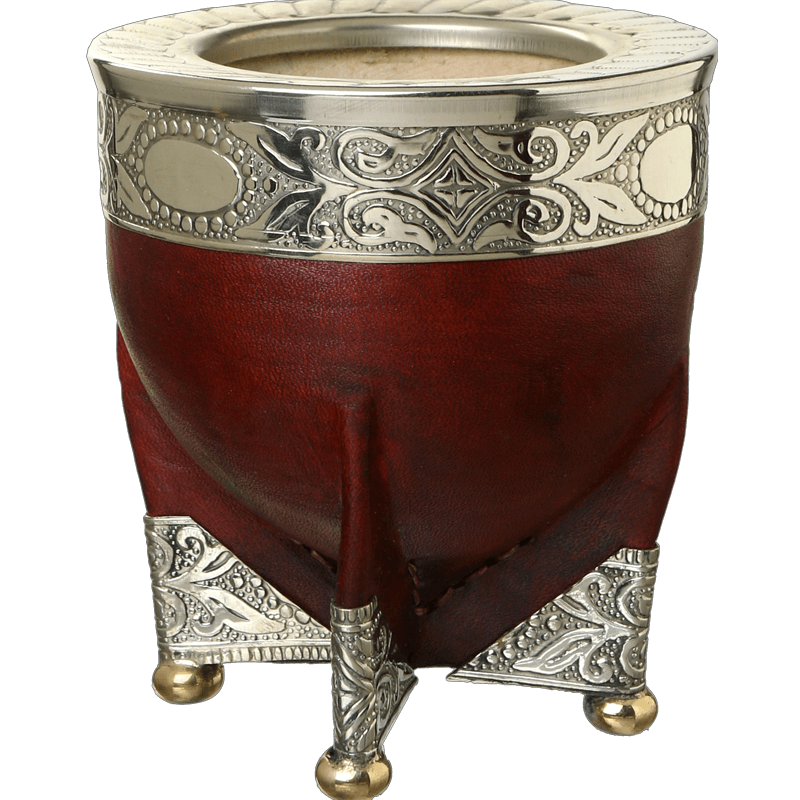

Bienvenidos a la tienda Online de
¿Tomamos Un Mate?
Puedes consultar todas nuestras variedades en el menú de navegación arriba
Productos más buscados
Yerba Canarias 1kg

Yerba Canarias es una yerba mate uruguaya reconocida por su molienda fina y sabor intenso. Elaborada con hojas seleccionadas y sin palos, ofrece una experiencia auténtica y de calidad para los amantes del mate.
Mate Algarrobo Virola de Alpaca
Este mate destaca por su diseño elegante y su virola de alpaca, que le da un toque distintivo y duradero. Ideal para quienes buscan combinar tradición y estilo en cada mateada.